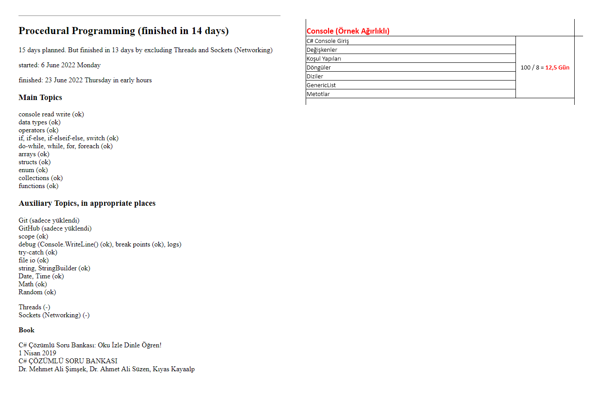

Öncelikle,
Pırlanta gibi, birbirinden değerli 15, hatta 16 genç ile beraber 4 hafta + 2 gün zaman geçirdik.
Çok şey öğrendim.
Ciddi bir tecrübem oldu.
Çok iyi de ayrıldık.
Her birisini kenidme ömür boyu arkadaş olarak kazanmış isem, işte o zaman benim için başarı olmuştur.
Artık şimdi elimden gelen şey, her birisinin iyi işlere girdiklerini görmek için 4 ay beklemektir. Bunu bekliyorum, istiyorum.
---------------------------
Bu sayfada bazı olumsuz kanaatler göreceksiniz. Oralarda öğrenci arkadaşlarımızı suçlamıyorum. Türkiye'nin milli eğitim sistemini suçluyorum. Böyle bir eğitim sistemi milli olamaz zaten.Türkiye halkını da suçlamıyorum. Böyle bir eğitim sistemini ancak Türkiye'nin düşmanı bir güç Türkiye'nin başına musallat eder. Böyle de olmuştur, bu kanaatteyim.
Türkiye'deki sistem beni bir defa daha haklı çıkardı.
---------------------------
Ben zaten harcadığım zamanın raporunu vermeli idim.---------------------------
İlk Günü sunu demiştim:
Amerika'da gördüğüm eğitim:
1. Derste anlatma
2. Laboratuvarda asistan gözetiminde ve yardımında yapma
2. Eve ödev ve proje
Bunların hepsini yaptım.
Yani, Amerikada gördüğüm eğitimi getirdim, verdim (Fakat öğrenci arkadaşlar israrla almadılar)
Amerikada aldığım eğitimden fazlasını da verdim burada.
O da aşağıdadır, kaynağa ulaşma konusudur, Akın Beyin söylediği konu.
---------------------------
Rahmetli Prof Oktay Sinanoğlu'nun sözünü hem kendime rehber aldım, hem sınıfa da söyledim:
"Bilgi, daima gelişen ve değişen canlı bir bünyeye sahip olduğuna göre,
öğretilecek en önemli şey öğrenme yöntemidir"
Yani, öğrenmesini öğretmeye çalıştım.
Nasıl?
Devamlı kaynağa ulaştırarak, kaynaktan göstererek, kaynaktan arayıp, buldurmayı ve öğrenmeyi göstererek.
---------------------------
Bir balık ver, bir defa doysun.
Balık tutmayı öğret, ömür boyu doysun!
Herkesin duymuş olduğu bir sözdür herhalde.
---------------------------
Türkiyenin tanınmış yazılımcısı ve eğitimisi, bence duayeni,
Akın Kaldıroğlu,
şunu tavsiye etti:
Önce şunu dedi:
Böyle eğitimlerden fazla bir şey bekleme, dedi.
Ben Bekledim.
Fakat Akın Bey haklı çıktı.
Sonra şu 2 şeyi tavsiye etti:
1. Keyifli bir ortam oluştur.
2. Kaynağa ulaştır.
İşte buna önem verdim.
Yani öğrenci arkadaşları kaynağa ulaştırmak için elimden geleni yaptım.
Çok enteresandır, öğrenci arkadaşlar da kaynağa ulaşmayacağız diye ellerinden geleni yaptılar, ve başardılar da.
Kaynak olarak şunları gördüm, düşündüm:
- Google
- YouTube
- Kitaplar
- Udemy
- bilgiye ulaşabildiğin başka her türlü kalnak, mesela çevre gibi, arkadaşlar gibi...
Bu kaynaklar arasından Google'ye önem verdim.
Çünkü içinde her şey, en güzel şekli ile var.
Derslerde Google'yi yoğun şekilde kullandım,
fakat buna karşılık öğrenci arkadaşlardan yoğun şekilde tepki ve itiraz aldım. Google'ye şiddetli muhalefet ettiler.
Halbuki ben Google'den her şeyin en güzelini 10 saniyede buldum, gösterdim.
Hadi bilemedin 20 saniye olsun en fazla.
Yani, öğrencilere kendi balığını kendi tutmasını öğretmeye çalıştım, şiddetli muhalefetle karşılaştım, balık tutmayı öğrenmemekte başarılı oldular.
---------------------------
Nasıl öğrettim:
Kod yazarken, örnek çözerken şu yolu takip edeceksiniz dedim:
"Bütünü parçalara ayıracaksınız.
"Bu parçaları sıralamaya koyacaksınız.
"Adım adım ilerleyeceksiniz.
"Merdiven örneğini verdim, adım adım çıkacaksınız. Elbette ki en basitten başlayarak, adıl adım zorlaştıracaksınız demek.
Devamlı şunu söyledim:
"Kaç saat klavyenin üzerinde kod yazarsanız o kadar öğrenirsiniz.
"Kaç saat, kaç gün çalışırsanız o kadar öğrenirsiniz.
"Bunun başka kısa bir yolunu ben bilmiyorum.
"Ben de böyle çok çalışarak öğrendim.
-1-
ilk 3 günün raporu
Müfredat üzerine konuştuk, tartıştık, düşündük.
Müfredatta şu değişiklikleri yaptık
Xamarin -> React Native (veya Flutter)
.NET 4.7 (2017) -> .NET 6 (2021)
C# 6 -> C# 10
MVC, EF, Web API 4.7 -> 6
jQuery -> React
Windows Forms azaltıldı
EF Windows Forms'un içinden alındı, MVC ve Web API nın içine konuldu
Bu müfredat değişikliğini tek başıma yapmadım, öğrenci arkadaşlar ile yaptık.
Ve bu 3 güne yakın bir zaman aldı.
Günde dersleri 50 dakika olacağı, teneffüslerin 10 dakika, öğlen tatilinin 60 dakika olacağı bile bu zamanda konuşarak ortaya çıktı. İyi de oldu.
-2-
Sınıf Başkanımız Orkun Beyin hesabına göre,
400 dakikayı Merhaba Dünya için harcadık.
1 gün 300 dakika olduğuna göre, 400 dakika 1 gün ve 2 ders olur.
Hello World'de 400 dakika ne yapıldı:
Solution ve içinde Proje açılması gösterildi
Proje ismi ve Solution ismi verilmesinin üzerinde duruldu
Solutionun nereye açıldığına dikkat çekildi
Var olan bir Solution'un içine yeni proje açılması gösterildi
Bununla ayrı bir solution içinde yeni proje açmanın farkı gösterildi.
IDE nin pencereleri tanıtıldı
import gösterildiği
bir import silinerek, hata, hata penceresinden bulundu, hatanın ne olduğu bulundu, Visual Studio'nun hataları nasıl tahmin ettiği, nasıl giderdiği göserildi
Debug a girilmiş olundu.
Artık bundan sonra IDE'yi kendi başlarına kullanabilecekleri seviyeye çıkılması için gerekli her şey yapıldı.
-3-
Merhaba Dünya bittikten sonra, Cuma günü, C# Çözümlü Soru Bankası kitabımıza başladık.
-4-
Cuma günü son dersin sonunda, hızlıca, 7 dakikada, Windows Forms'da merhaba dünya yapıldı. Hafta sonuna verdiğimiz oyun projesini verebilmek için bu yapıldı.
Bu zamanı PROSEDÜREL PROGRAMLAMAYA ayırdık.
56 Proje, yani 56 komple örnek kod yapmışım.
39 Solution, içlerinde 56 Proje (tıklayarak bu projeleri indirebilirsiniz)
Bazı projelerin içinde birden fazla örnek de vardı.
C# Çözümlü Soru Bankası kitabının ilk 182 sayfası bitti.
Hepsi 329 sayfa.
Prosedürel Programlama ile ilgili olan bütün kısmı bitti.
Soruları ya sınıfta çözdük, kalan soruları da eve ödev verdik.
Rakamlar burada!
Şimdi aşağıdaki resme bakalım.
Bizden ne istenmişti?
Biz ne yapmışız?
Bizden, ne olduğu pek de belli olmayan bir şeyler için 12,5 gün vermişler.
Biz onun 2, belki 3 katı konuyu 14 günde anlatmışız.
Yani 25-30 günlük konuyu 14 günde anlatmışız.
Yani, bizden istenenden 2 katı hızla gitmişiz.
Yani, bu 14 gün içinde mükemmel bir başarı gösterdim, hoca olarak.
Ben naklettim. İste sayılar ortada, yaptığım örnek projeler, kodlar ortada.
Fakat verdiğim eğitim alınmadı.

---------------------------
Burada, sınıfın artık benimle devam etmemesi gerektiğine karar verdik, sınıfla birlikte bu kararı aldık.
Çünkü sınıf benden öğrenemiyordu.
Sınıf 4 ay sonra iş arayacaktı ve insan kaynaklarının karşısına çıkacaktı.
Beni değiştirmek gerekiyordu.
Sınıfın istediği dilden konuşan bir hoca gerekiyordu.
Yönetimden israrla talep ettik.
Sonuç oldu.
Yeni hoca bulundu.
Fakat, benim ayrılacağım belli olduktan sonra, 2 gün daha çalışmak zorunda kaldım.
O 2 günde de şu aşağıdakileri yaptık.
Cuma günü ayrılmaya hep birlikte karar verdikten sonra, 2 gün daha mecburi olarak beraber derse devam ettik.
Pazartesi günü: 2 class örneği yaptık, C# kitabımız tabanlı olarak.
Salı günü: Kitabımızın Object Oriented konusunda zayıf kalması üzerine, kendim sıfırdan bir örnek yaptım. Bu örnek 5 ders yani bir günden 1 ders eksik sürdü.
Bu örnekte:
bir ben yaptım, bir sınıfa yaptırdım.
bir property ben yaptım, 1 tane de sınıfa eklettirdim.
bir metod ben yazdım, bir metod da sınıfa eklettirdim.
iki ctor ben yazdım, bir ctor da sınıfa eklettirdim.
bir sınıfı ben miraz aldım, bir sınıfı da sınıfa miraz aldırdım.
bir miraz sınıfının ctorlarını ban yaptım, öteki miras sınıfının ctor larını sınıfa miras aldırdım.
Yani:
abstract sınıflar ve interface hariç, bütün object oriented konusunu, sıfırdan bir uygulama içinde, kendileri de yaparak görmüş oldular.
Yani, bence mükemmel bir örnek oldu.
Bu iki gündeki projeleri buradan indirebilirsiniz.
Perşembe günü,
Öğrencileri tek tek konuşturdum,
Öğrenciler konuşurken, sınıf başkanımız Orkun Bey de tek tek yazdı. Bu azdıklarını bütün öğrencilere gönderdi.Yani, bütün şikayetler bütün öğrencilerin ellerinde var. Zaten kendi söyledikleri şikayetler.
Bütün öğrenciler verdiğim eğitim hakkında olumsuz görüş bildirdiler.
Bu olumsuz görüşler ve iddialar karşısında henüz kendimi müdafaa etme hakkımı kullanmadım.
Bu zaman alıyor.
Gerekirse, ben de zaman bulabilirsem, bu hakkımı buradan kullanabilirim.
Şu kadarını söyleyeyim:
Bu şikayetlere katılmyorum. Haksız buluyorum. Yanlış buluyorum, bu son 4 haftadaki durum, şikayetlerde anlatılan durum olmadı. Şikayetler haksızdır. Çok ufak tefek bazı itirazlar hariç.
---------------------------
Çok uzun yazdım.
Kontrol de edemiyorum şimdi yazdıklarımı.
Yanlış yazımları affetmenizi rica ederim.